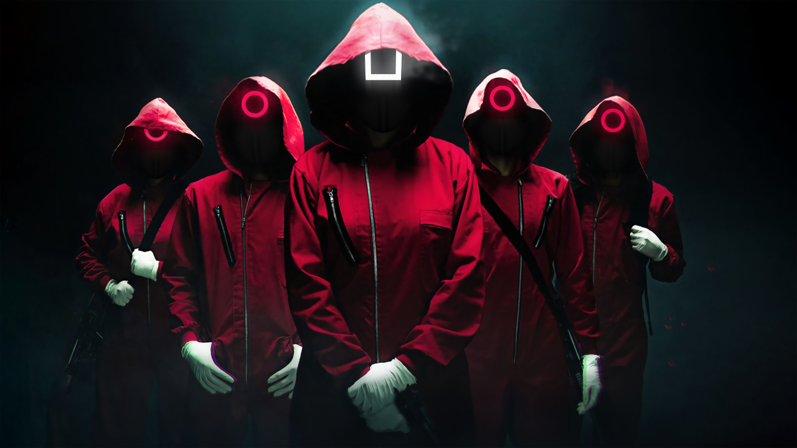

Merhaba, Ben Mehdi Alturk. 33 yaşındayım. Kocaeli'nin Darıca ilçesinde ikamet etmekteyim. Sakarya Üniversitesi Bilgisayar Programlama bölümünde okumaktayım. Futbol, voleybol ve basketbol oynamayi severim.Ayrıca film, dizi izlemekten ve kitap okumaktan çok keyif alırım.
Squid Game
Squid Game, 17 Eylül'de Netflix'e gelen dizi, para sıkıntısı çeken yüzlerce kişinin para karşılığında çeşitli çocuk oyunlarında yarışmaları teklifini kabul etmelerinin ardından yaşadıkları konu ediliyor